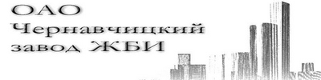
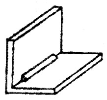

|  | Узнать актуальные цены и заказать продукцию можно по телефонам: в Бресте:8 (0162) 53 – 16 – 68, 8 (029) 507 – 41 – 20 МТС в Чернавчицах:8 (0162) 94-54-32, 8 (033) 644 - 54 – 32 МТС |
Оголовок Г-образный ОГ – железобетонная конструкция Г-образной формы, представляющая собой две плиты, скрепленные под углом 90 градусов, одна из которых длиннее и толще другой. Изделие применяется для сооружения водопропускных систем под дорожным полотном. Его задача подпирать откос насыпи, защищать таким образом выходное отверстие трубопровода от засыпания грунтом. Оголовок сконструирован специально для того, чтобы работать в условиях длительного давления насыпи. Оголовок обладает высокими эксплуатационными характеристиками: прочностью, низким водопоглощением, нечувствителен к сильным морозам. Прекрасно подходит для защиты обочин дорог.
|  | |||||
| Марка конструкции | Габаритные размеры, мм | Масса конструкции, кг | |||
|---|---|---|---|---|---|
| l | b | h | t | ||
| ОГ-10 | 1000 | 500 | 1000 | 100 | 340 |
| ОГ-18 | 3000 | 1100 | 1800 | 130 | 2750 |
| ОГ-23 | 1500 | 1200 | 2300 | 150 | 1925 |
| ОГ-28 | 2000 | 1400 | 2800 | 200 | 3875 |
| ОГ-33 | 2000 | 1600 | 3300 | 200 | 4775 |
Изначально данный тип оголовков проектировался для использования в качестве опорных стенок при проведении трубчатых водоводов. Однако впоследствии Г-образные блоки (открылки) стали использовать для формирования силосно-сенажных траншей, оросительных и осушительных систем и даже искусственных садков для рыб. Составленные в два ряда один к одному они формируют своеобразный резервуар, который может наполняться водой, или канал, по которому может течь поток. Также с использованием данного изделия удобно строить рампы для погрузки или разгрузки грузового транспорта ОГ-10, ОГ-18, ОГ-23, ОГ-28, ОГ-33 – типы оголовков Г-образных, которые производит наше предприятие. Цифры в маркировке означают высоту одной из стенок. Полные габариты можно посмотреть в таблице. ОАО «Чернавчицкий завод ЖБИ» располагается в аг. Чернавчицы в 9 км от Бреста. Возможна транспортировка нашей продукции в любые регионы Беларуси: Минскую, Гомельскую, Могилевскую, Гродненскую и Витебскую области.